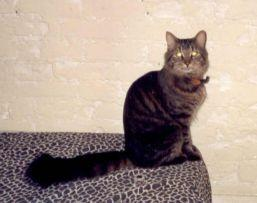
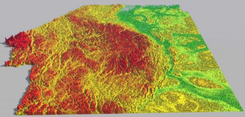

This page shows a couple examples of setting up the Javascript Magnifier
over images. To use the magnifier, grab the little box and drag it around.

This is a neighborhood cat that visits me sometimes.

This is a picture of the Mackenzie Mountains created by Andy Murray.
Generic Javascript Magnifier
Rupert Brooks <rbrooks@cyberus.ca>
Last modified: Tue May 27 10:34:09 EDT 2003